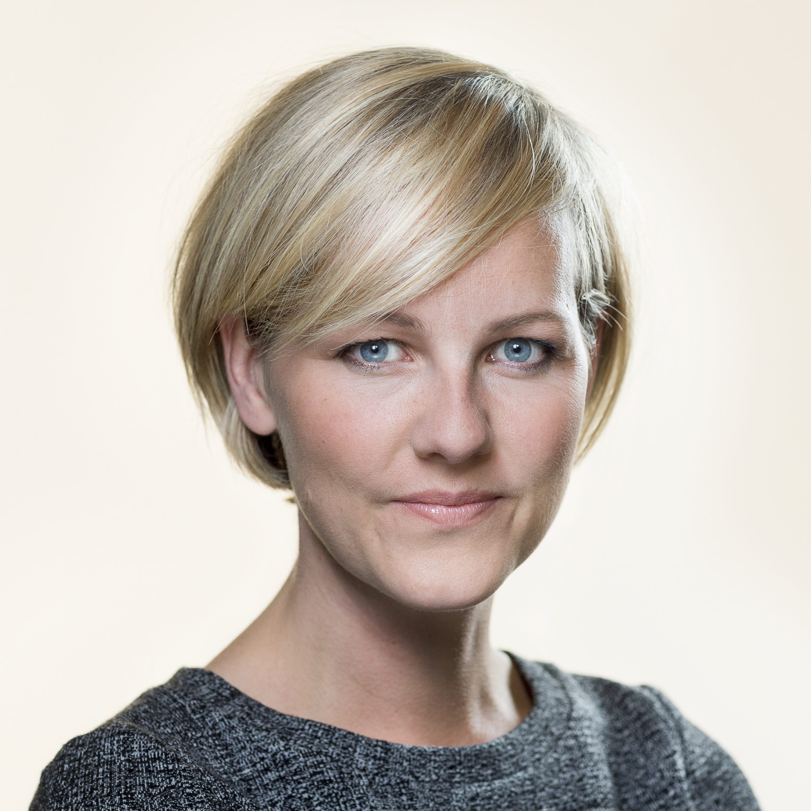

Om Socialdemokraterne i København
Vores vision
Socialdemokraterne arbejder for et stærkt fællesskab, hvor alle har lige muligheder og hvor ingen bliver efterladt. Vi tror på en fremtid, hvor vi sammen kan skabe et mere retfærdigt og bæredygtigt København.
Med rødder i solidaritet og social retfærdighed kæmper vi for uddannelse, velfærd, ligestilling og en grøn omstilling.

Pernille Rosenkrantz-Theil
Spidskandidat ved kommunalvalget 2025

Ida Auken
Byrådsmedlem

Steen Brogård
Ungdomsrepræsentant